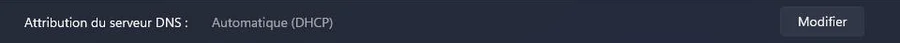
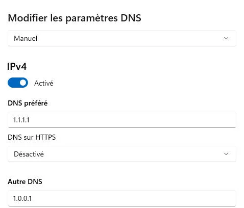

Ton téléphone ne connaît pas les noms des sites, seulement des numéros. Le DNS, c'est l'annuaire d'Internet qui fait la traduction. Par défaut, c'est celui de ta box, mais tu peux le changer en deux minutes.
Windows 11 · Android · iPhoneGratuit2 captures annotées
1
C'est quoi ?
Le DNS (Domain Name System) est l'annuaire d'Internet. Quand tu tapes youtube.com, ton appareil demande à un serveur DNS l'adresse IP (le numéro) du site, puis s'y connecte. Ça se joue en une fraction de seconde, à chaque site et à chaque appli.
Un nom devient un numéro
Les ordinateurs se parlent avec des adresses IP. Le DNS garde la correspondance entre les noms qu'on retient et les numéros qu'ils utilisent.
Le principe
Par défaut : ta box
Ta box donne à tes appareils le DNS de ton fournisseur d'accès. Il voit donc la liste des sites que tu demandes.
Par défaut
Tu peux le changer
Sur un appareil ou directement sur la box (si elle le permet) : il suffit d'entrer l'adresse d'un autre DNS, par exemple 1.1.1.1.
2 minutes
Il peut aussi filtrer
Un DNS filtrant répond « inconnu » aux sites de pub, de pistage ou malveillants : ils ne se chargent plus, sur tout ce qui l'utilise.
Anti-pub
Ce qu'il faut savoir (lu pour toi dans la doc)
!Pas de miracle sur YouTube. Un DNS bloque les domaines de pub. Les pubs servies par le même domaine que la vidéo (YouTube, Twitch) ou les publications sponsorisées des réseaux sociaux passent quand même.
↔Changer de DNS ne cache pas tout. Ton fournisseur d'accès voit toujours à quels serveurs tu te connectes. Pour chiffrer les questions DNS elles-mêmes, active DNS sur HTTPS (Windows 11, navigateurs) ou le DNS privé d'Android.
⌂Sur la box, c'est pour toute la maison. Changé dans la box (ou avec AdGuard Home sur ton réseau), le DNS s'applique à tous les appareils, même la télé et les consoles. Certaines box ne permettent pas de le modifier.
⚠Pas pour contourner la loi. En France, des sites sont bloqués par décision de justice. Changer de DNS n'autorise pas l'accès à des contenus illégaux.
€Gratuit. 1.1.1.1, Google Public DNS, Quad9 et les serveurs publics d'AdGuard DNS sont gratuits, sans compte.
2
Comment ça marche
Comment ça marche, puis comment changer de DNS sur Windows 11 (captures du 25/11/2026).
1
Tu tapes un nom
youtube.com › Serveur DNS › Adresse IP
Ton appareil demande au serveur DNS : « quel est le numéro de youtube.com ? ». Le serveur répond par une adresse IP, ton navigateur s'y connecte. La réponse est gardée en mémoire un moment pour aller plus vite la fois suivante.
2
Ouvre l'attribution du serveur DNS
Paramètres › Réseau et Internet › Wi-Fi ou Ethernet › Propriétés
Touche Windows + I, puis Réseau et Internet, ta connexion (Wi-Fi ou Ethernet), Propriétés. À la ligne Attribution du serveur DNS, clique sur Modifier.

Windows 11 : Attribution du serveur DNS (Automatique = le DNS de ta box).
3
Passe en Manuel et tape 1.1.1.1
Manuel › IPv4 : Activé › DNS préféré : 1.1.1.1 › Autre DNS : 1.0.0.1
Choisis Manuel, active IPv4, tape 1.1.1.1 en DNS préféré et 1.0.0.1 en autre DNS, puis Enregistrer. Pour bloquer les pubs, mets plutôt 94.140.14.14 et 94.140.15.15 (AdGuard DNS). Pour revenir en arrière : Automatique (DHCP).

Windows 11 : Modifier les paramètres DNS, en Manuel (capture prise sans enregistrer).
4
Sur téléphone
Android : DNS privé › iPhone : Wi-Fi › (i) › Configurer le DNS
Android : DNS privé (souvent dans Paramètres › Réseau et Internet, selon la marque), puis un nom d'hôte comme one.one.one.one ou dns.adguard-dns.com. iPhone : Réglages › Wi-Fi › (i) › Configurer le DNS › Manuel (réseau par réseau), ou l'appli 1.1.1.1 de Cloudflare.
3
5 usages concrets
01
Plus de vie privée
Passer du DNS de ta box à 1.1.1.1, qui efface les adresses IP sous 25 heures (audit indépendant).
DNS de la box→1.1.1.1→IP effacée en 25 h
02
Bloquer les pubs
Un DNS filtrant (AdGuard DNS) répond « inconnu » aux régies : moins de pubs, même dans les applis.
Site de pub ?→« Inconnu »→Pas de pub
03
Protéger les enfants
1.1.1.3 (Cloudflare) ou le serveur Famille d'AdGuard bloquent aussi les contenus adultes.
1.1.1.3AdGuard Famille
04
Éviter les sites piégés
1.1.1.2 ou Quad9 (9.9.9.9) bloquent les domaines connus pour le phishing et les logiciels malveillants.
1.1.1.29.9.9.9
05
Toute la maison d'un coup
AdGuard Home (ou Pi-hole) sur un Raspberry Pi, un NAS ou Docker : un seul DNS pour tous les appareils, avec un journal de ce que chacun contacte.
AdGuard Home→Box→Tous tes appareils
4
Les alternatives
Les annuaires les plus connus. Tous gratuits ; la différence, c'est ce qu'ils filtrent et ce qu'ils gardent.
Cloudflare 1.1.1.1
1.1.1.1 · 1.0.0.1Gratuit
OuiTous
Bon pour : rapidité et vie privée : adresses IP effacées sous 25 h, audité par KPMG. Variantes 1.1.1.2 (sans malware) et 1.1.1.3 (+ contenus adultes).
AdGuard DNS
94.140.14.14 · 94.140.15.15Gratuit
OuiTous
Bon pour : bloquer pubs et pisteurs sans rien installer ; serveur Famille en plus.
AdGuard Home
Ton propre serveur DNSGratuit, open source
OuiRaspberry Pi, NAS, Docker
Bon pour : toute la maison, tes propres règles et le journal de chaque appareil (voir notre vidéo RepoPop n°08).
Quad9
9.9.9.9Gratuit
OuiTous
Bon pour : sécurité : bloque les domaines malveillants ; fondation basée en Suisse.
Google Public DNS
8.8.8.8 · 8.8.4.4Gratuit
ProcheTous
Bon pour : fiable, sans filtrage ; journaux avec IP effacés sous 24 à 48 h.
DNS de ta box
Automatique (DHCP)Inclus
Par défautTous
Bon pour : ne rien régler ; ton fournisseur d'accès voit les sites demandés.
Notre verdict
TURQUIE, MARS 2014Twitter est bloqué surtout par le DNS des opérateurs. Des habitants taguent 8.8.8.8 et 8.8.4.4, le DNS de Google, sur les murs et les affiches. Le gouvernement finit par bloquer aussi le DNS de Google, puis les adresses IP de Twitter.
Rejoins les Repo-Potes
Chaque vidéo RepoPop Décode t'explique un sujet IA ou tech en moins d'une minute, avec sa fiche complète comme celle-ci.